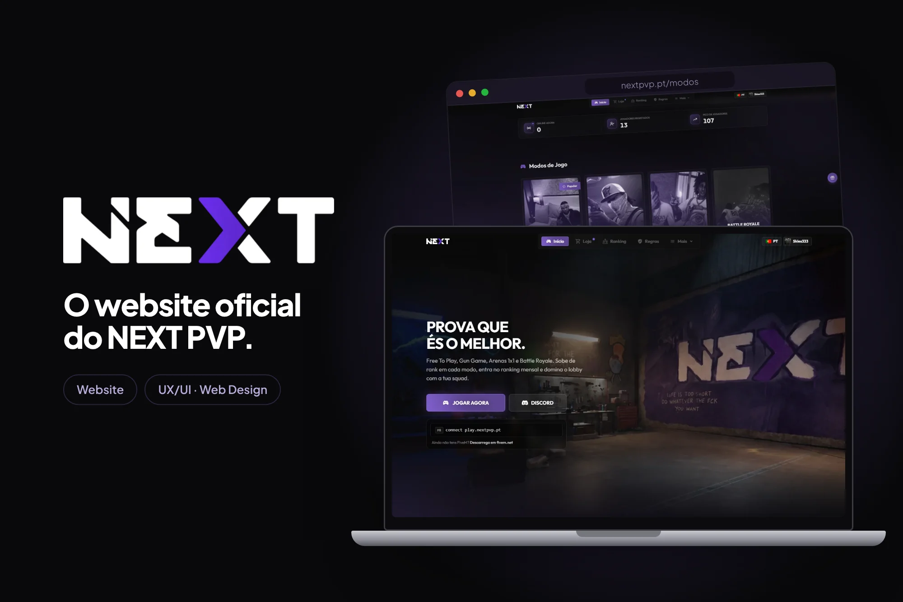
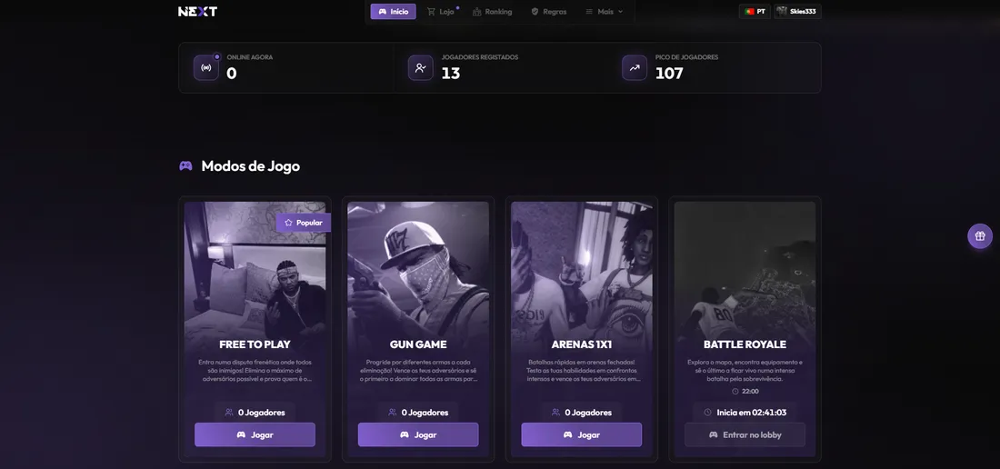
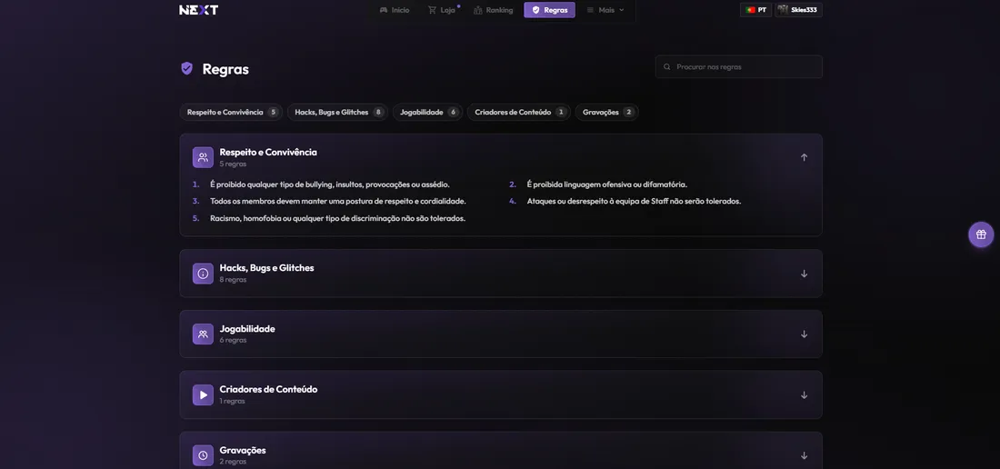
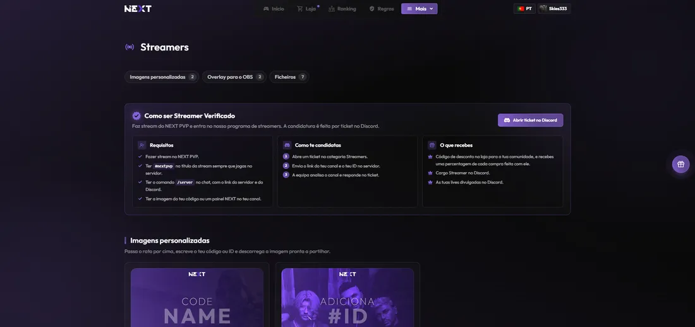
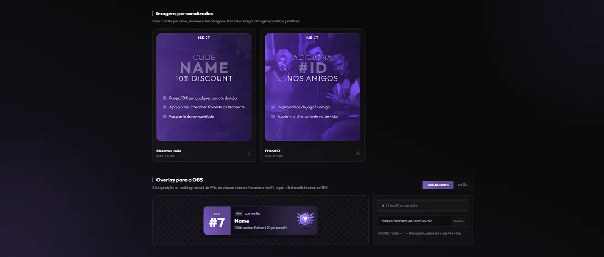
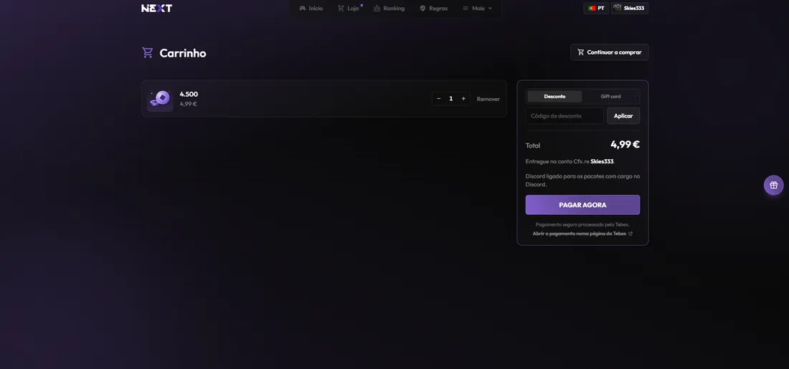
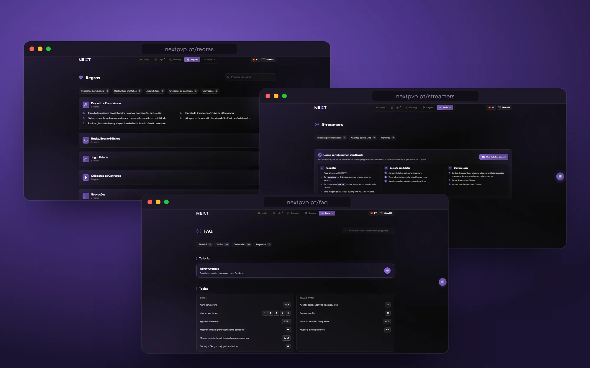
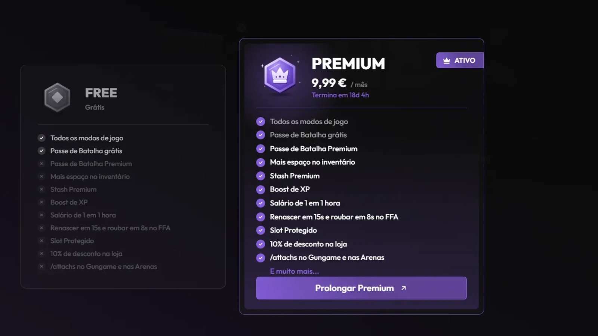
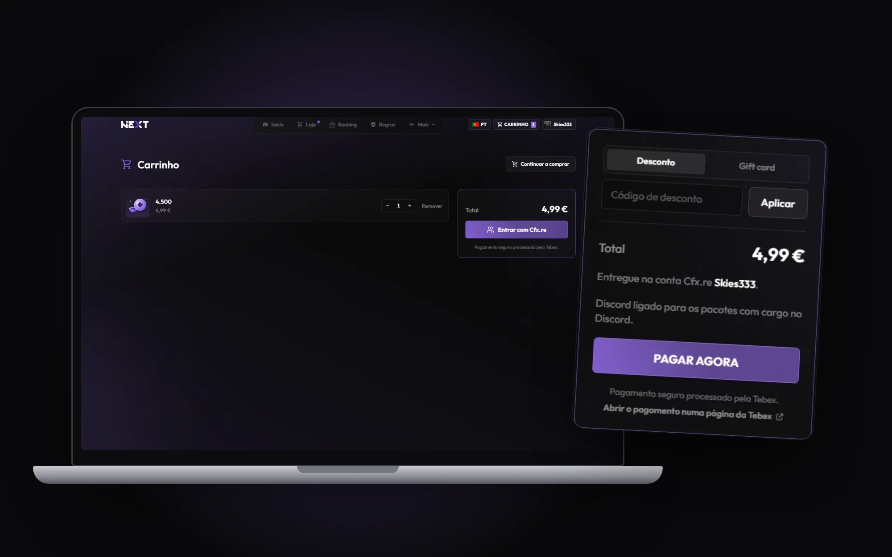

01
Códigos de criador
Cada criador de conteúdo verificado tem um código próprio, como o NAME10. O jogador ganha 10% de desconto e o criador recebe uma comissão — a comunidade passa a promover a loja por si.
Site e loja online do servidor NEXT PVP.

O site do NEXT é a porta de entrada do servidor: o primeiro sítio onde os jogadores chegam antes de entrarem numa partida. O objetivo foi levar a energia da marca NEXT para a web — escura, roxa e competitiva — mantendo tudo o que os jogadores precisam a um clique: modos de jogo, estatísticas em direto, regras, perguntas frequentes, área de criadores de conteúdo, um tutorial passo a passo e uma loja online completa, com carrinho e pagamento.

Da página inicial ao pagamento — arrasta para percorrer as páginas e clica para as ver em grande.









O site usa o mesmo sistema visual das interfaces dentro do jogo: pretos profundos, um fundo violeta-noite e o roxo NEXT como única cor de destaque, para que a passagem do navegador para o servidor seja natural. Uma secção de abertura forte, com o botão para jogar e o comando de ligação, põe os novos jogadores em jogo em segundos, enquanto cartões, filtros e secções que abrem e fecham tornam fáceis de ler conteúdos longos, como as regras e as perguntas frequentes.

A loja online não é só um catálogo: cada detalhe foi pensado para aumentar a conversão, premiar a comunidade e fazer os jogadores voltar.

Cada criador de conteúdo verificado tem um código próprio, como o NAME10. O jogador ganha 10% de desconto e o criador recebe uma comissão — a comunidade passa a promover a loja por si.
Cinco pacotes de moedas lado a lado. O do meio leva o selo “Mais popular” e o maior o “Melhor valor”, com o preço antigo riscado e moedas de bónus a crescer em cada nível.
Um campo discreto no carrinho aceita códigos e cartões-oferta. Usamos códigos sazonais — lançamento, fins de semana de moedas a dobrar, Black Friday — para criar picos de vendas planeados.
A loja do jogo renova-se todas as semanas, com uma contagem decrescente bem visível. A urgência faz com que os jogadores voltem com frequência para não perderem os itens.
Gratuito e Premium aparecem lado a lado, com os benefícios marcados. O plano pago fica destacado a roxo, para que a vantagem se perceba num segundo.
Carrinho e pagamento em dois passos, com o total sempre visível e entrega automática na conta Cfx.re e no Discord. Menos cliques, menos carrinhos abandonados.
O resultado é um site completo e coerente, que informa, converte e apoia a comunidade. Os jogadores descobrem os modos, consultam o ranking e conhecem as regras, e a loja — com códigos de criador, pacotes com preço âncora, descontos sazonais e um pagamento em dois passos — transforma visitas em apoio ao servidor, tudo na mesma linguagem do jogo que estão prestes a jogar.


A minha marca: um traço, duas letras, uma ideia.
2026
Identidade visual e aplicação de treino em casa e no ginásio.
2026
Criação de um branding completo.
2020
Criação da identidade de marca e da comunicação visual.
2022
Criação de um rebranding completo.
2025
Reorganização e redesign da área de escritório.
2022
Sistema de interfaces dentro do jogo para um servidor FiveM.
2025Tens um projeto em mente? Vamos conversar — estou disponível para trabalhar em Lisboa e em qualquer parte do mundo.